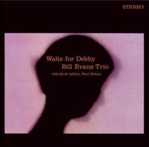
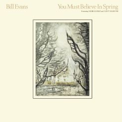
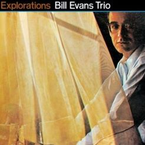

Waltz For Debby (1962)
"Waltz for Debby" is a classic jazz album by the Bill Evans Trio, recorded live at the Village Vanguard in 1961. The trio, consisting of Evans on piano, Scott LaFaro on bass, and Paul Motian on drums, delivers a captivating performance with a focus on intricate interplay and sensitive improvisation. The album is known for its emotive renditions of jazz standards, including the title track, "Waltz for Debby." The intimate and spontaneous nature of the live recording, coupled with Evans' lyrical piano playing, has made "Waltz for Debby" a timeless and influential work in the realm of jazz.

You Must Believe in Spring (1981)
"You Must Believe in Spring" is a posthumously released album by jazz pianist Bill Evans, recorded in 1977 but released in 1981, after Evans' death. The album features the trio of Evans, bassist Eddie Gómez, and drummer Eliot Zigmund. Known for its contemplative and introspective mood, the album includes a mix of original compositions and well-known standards. The title track, "You Must Believe in Spring," is a poignant piece that showcases Evans' emotive and nuanced piano playing. The album reflects Evans' timeless ability to convey deep emotions through his music, making it a fitting addition to his acclaimed discography.

Explorations (1961)
"Explorations" is a jazz album by pianist Bill Evans, released in 1961. It features the Bill Evans Trio, with Scott LaFaro on bass and Paul Motian on drums. The album is known for its innovative approach to jazz standards and the interplay among the trio members. Notable tracks include "Israel" and Evans' interpretation of "Beautiful Love." "Explorations" showcases Evans' harmonic sophistication, expressive touch on the piano, and the cohesive improvisational dynamics of the trio. The album is considered a classic in the piano trio format and a significant contribution to the development of modern jazz.